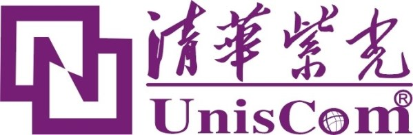

中國人因為近千年來（10世紀的五代十國是中國最後一個兵禍連綿的動亂時代，其後的宋朝開始廣泛使用煤鐵和近代農業技術，中國成為世界第一先進國家，人口大幅增長），人口密度高，人均資源少，内部競争一直很激烈，文化中缺乏英語系民族的那種自我組織的動力，所以歷史上有一盤散沙的傳統。即使在南方食米區，因種稻灌溉的需要，與左鄰右舍有密切合作的習慣（這就是台灣的所謂“人情味”的來源）；但是在較大規模的社會範圍下，仍然是勇於内鬥而怯於公戰。因此我一直覺得，中國共產黨對中國社會的改造，在正面上有两個很大的貢獻，其中一個就是建造了一個世界最大的嚴密組織，有舉世無雙的動員能力。
共產中國在鄧小平改革開放後的35年裡，不但維持了平均每年9.7%的GDP增長率和温和的通貨膨脹率，最重要的是把六億赤貧人口提升到有產階級，有了水電和廁所，從動物般的只圖糊口的生活，進化到有人性尊嚴的生存。根據聯合國2012年的統計，中共的扶貧成果，占全球同期總成果的80%，净成果的100%。也就是除去了共產中國，全世界的赤貧人口，從1980年到2012年是没有變動的。我個人認為，任何政府的第一要務，不是什麼自由民主，而是要改善人民的生活水準；所以從實際結果來看，鄧小平後的中共是人類歷史上成就最高的政府。而它所靠的優勢，不是外來的援助，不是對外的掠奪，不是内部的自然資源，也不是便宜的人工（非洲和南亞的人工更便宜，何況中國從16世纪開始就已經有過多的便宜人工），而是舉世無雙的組織動員能力。而在經濟上的組織動員，中共有两個主要管道，一個是地方政府，另一個是國營企業；在最近的十年裡，後者的表現是優於前者的。
在這方面一個很明顯的對比，是汽車和高鐵。在這两個工業的發展過程初期，中共都要求外來的厰商必須以技術合作的方式來做買賣；但是汽車工業的發展是交給好幾個省級單位掌控的公司來和外資合作，高鐵則是由當時的中央鐵道部統籌監控幾個國營企業與外資的技術合作細節。中共當局稱前者為“以市場換技術”，後者則是“以項目換技術”。两者雖然看來很相似，結果卻全然不同。現在外來的汽車厰商市場占有率越來越高，而中方的公司始终没有學會最先進的設計能力和製造技術；相對的，中國的南車和北車两個公司用了不到十年，就把更複雜更尖端的高鐵列車技術完全吃透。今日的國際鐵路列車市場上最激烈的競争，恰是在這两個中國公司之間，以致李克强目前正在考慮是否將两家合併，以免殺價過頭，两敗俱傷。這様決然不同的結果，其實不難理解：技術引進是國家整體的需要，對省級單位來說，卻不是值得犧牲利潤的目標，在細節的運作上自然就有不同。美國人說，“The Devil is in the details（細節上出魔鬼）”，誠不我欺也。所以中共技術升級成功的，都是走了“以項目換技術”的工業，如煤電（有些最先進的技術來自瑞士的ABB Ltd.，我在前文《中共的煤電技術》裡忘了提）、核電、電力傳輸和先進化工。
在過去這一两年裡，幾乎每個月的外貿統計資料出來的時候，中共的官方媒體都會出一篇文章來抱怨中方的最大逆差項目。這個項目不是原油，而是晶片。以2013年為例，中共的晶片進口總值是2322億美元，原油只進口了2196億。而李克强計劃以20年的時間來全面提升中國產業的技術水準到世界領先的地步，晶片工業很明顯的是最重要的環節，因此中國工信部在2014年十月14日宣布“國家集成電路產業投資基金”已經於九月24日正式成立，就完全不是意外了。（台灣媒體少見地先知先覺，在十月10日就已經報導了這個消息，詳見http://www.chinatimes.com/realtimenews/20141010002401-260410 。感謝黄崇博提醒我的注意。）
其實早在今年六月，中國工信部發表的《國家集成電路產業發展推進綱要》就已經提出要設立這個基金，不過當時我以為是普通的官場八股，没有特别關注。現在的消息是預計將投資1250億人民幣，也就是200億美金，只相當於英特爾（Intel）一年半的投資額。有消息說中央與地方各級政府的投資總額將達到6000億人民幣，預計帶動中外民間投資50000億人民幣，即8000億美金，這就相當靠譜了。不過更大的動力，將會來自於强力的組織，也就是如同十年前的高鐵計劃一様，由中央政府統籌對外交涉，迫使技術領先的外商老老實實地轉移關鍵技術。《國家集成電路產業發展推進綱要》裡面提到還將成立“國家集成電路產業發展小組”，所以應該是由這個新的小組來負責。在實際執行上，是分三路進行的：設計、製造和封裝測試。在設計方面，主將包括清華紫光；製造由中芯領軍；封測的龍頭則是江蘇長電。目前已知的外商交易是英特爾以十五億美元入股清華紫光，而高通則將與中芯合作開發二十奈米製程。

清華紫光的商標。清華紫光成立於1999年，是清華大學的下属公司之一，是所謂“高校產業”的典型。
以中共最近十幾年的記錄來看，如此志在必得地由中央政府直接領導的產業發展計劃，還没有失敗過。雖然中共最终的目標是趕上美國，在中短期來說，受到最大威脅的恰是技術水平較低的台灣公司。如果台灣能同心協力，政商民一體，努力提升競争力，或許還有一搏；不過我不是喜歡做白日夢的人。現實上，台灣各式各様的利益小群體的力量過度發達，主宰了社會發言權；而政府則積弱難返，連基本的社會和政治秩序都無力維持，恰是中共式的强力組織能力的相反。台灣在蒋經國過世之後，政治動蕩，經濟停滞，吃了二十多年的老本，晶片工業已經是口袋裡最後的本銭。可是選民依舊罔顧現實，既不與大陸經濟整合，又不用心提升競争力，得過且過，夢想能自外於中共主導的新世界秩序，恐怕最後只好跟印度一様搬到另一個行星上（詳見前文《印度的烈火系統弹道飛弹》）。
zjtzlhlhs
2018-03-14 03:19
我发现您过往的文章虽然讨论了许多领域、学科的问题，但当下发展最为迅猛的互联网、人工智能等热点领域您似乎一直都没有发表过见解。这应该是当今世界最大的增长点了，转业码农的人也非常多（所谓“条条大路通CS”，回报确实更高）。有机会还是很期待您能在这方面指点一二的。
其實有關半導體的Moore’s Law即將失效，我也提過好幾次了。我同意在2025年之後，半導體產業很可能會撞墻，成爲成熟的行業。這個過程必然會將計算機的重點轉移到軟件和應用上，你説的AI應該會紅上好一陣子。
我不詳談這些事，是因爲這個趨勢是大家都知道的，也就不需要我來插嘴。而且自由市場經濟，通常會一窩蜂、追捧過頭，即使大趨勢是對的。
中國正在全力投資追趕美、韓、台的半導體工業，這正是像你這樣人才囘國的大好機會，與其在美國公司做萬年的基層技術人員，回國15、20年，你可能當上廠長、副廠長，何樂而不爲？
2018-03-14 03:33 回复
zjtzlhlhs
2018-03-14 03:56
谢谢您的指点！我想有生之年还是有机会看到中国的前沿变成人类的前沿的哈哈。
流行往往衝過頭，不見得是最佳選擇。
2018-03-14 15:04 回复
迷信金融
這是博客近年討論科技管理的既有結論之一。
2024-10-19 00:57 回复
Taizi Huang
2025-02-23 07:57
华为在消费电子领域是苹果公司最好的学生。不管是对外宣传（艺术风格），还是对内整合产业链（掌握半导体设计、操作系统核心技术，其余交给产业链上下游供应商），都是极其相似。苹果电脑用的是自己设计的 MacOS 和 M 芯片，今年也许就能看到搭载鸿蒙操作系统和麒麟芯片的华为电脑上市。有一点遗憾是，华为还没开发出新的消费电子品种（苹果公司在 iPhone 和 iPad 之后，还有 Apple Watch 和 AirPods），这方面离自己的老师还有差距（三折叠是大胆尝试，但是注定小众）。
我沒有你這麽悲觀。美國產業空洞化是80年代初專業權威因爲通脹考慮而容許的，而追溯通脹的由來，則是工會和福利的過度發展，企業管理官僚化後的低效，以及越戰和冷戰的大量浪費（包括阿波羅計劃），這些都是中國有能力避免的。至於金融化，也是Reagan和Clinton以政策有意推動的，以補償實體產業外移之後企業獲利的損失，在那之前，Glass-Steagall Act of 1933曾保護美國經濟達半個世紀之久，所以顯然只要政治上層願意阻止，金融化並非市場經濟的必然結果。
2025-03-04 04:53 回复
Taizi Huang
2025-03-04 17:52
我没有表述清楚。我的关注重点不在于金融化，而是以华为为例子，从产业链的角度审视消费电子行业未来的发展。所以我的态度是非常乐观的。不过市场化必然导致金融化，的确是我做其他推理时的底层逻辑之一。但从您介绍的历史看来，逻辑并非如此直接，需要考虑实际中政治、产业、金融三方博弈。这对我是一个提醒，思考的时候必须多了解相关案例历史。
腐化的動力來自利益集團，自然是無時無處不在，所以才會有中國歷史上300年朝代更替的規律。但是若有明君賢臣，配合運氣，中興甚至復興也有希望。美國在20世紀前半做出了足夠的改革，才能把握兩次大戰的機遇，奠定後來的霸主地位。其後Glass-Steagall阻滯金融化的那50年裏，企業（商學院+官僚化）、政治（尤其游説業）和學術（主要是經濟學和金融學界）都逐步腐朽，所以直觀上開放金融化就是Reagan和Clinton的錯誤政策選擇，但換個角度來看，也有人會想說是大勢所至、他們只不過順應時代潮流。然而，歷史潮流大勢固然重要，但它終究是許多個人行爲的集合，（尤其在早期）並沒有絕對的必然性，也就不成爲社會精英同流合污的自動藉口。換句話説，國家興亡、匹夫有責，不但政治高層領導擔負著為全國民衆開闢正確前路的重任，廟堂之外的赤心士子也應該時時為滌清輿論、提升文化盡一份力量，努力阻止或逆轉利益集團對國家社會的腐朽效應，否則後世真正無力回天，責任不正在這些前代的知識精英身上嗎？中國的長期腐化勢力早已凸顯在學術界和教育界，博客對中科大反復吃力不討好的批判純粹就是在盡我作爲知識分子的時代責任。
小米自研芯片
小米能在美國制裁海嘯之下玩出這些花樣，要麽美國人都是瞎子，要麽小米只是新版的聯想。
我個人的建議是不要輕易假設別人是瞎子，給美國人一點時間，自然會公告出小米屬於華爲還是聯想的類別。